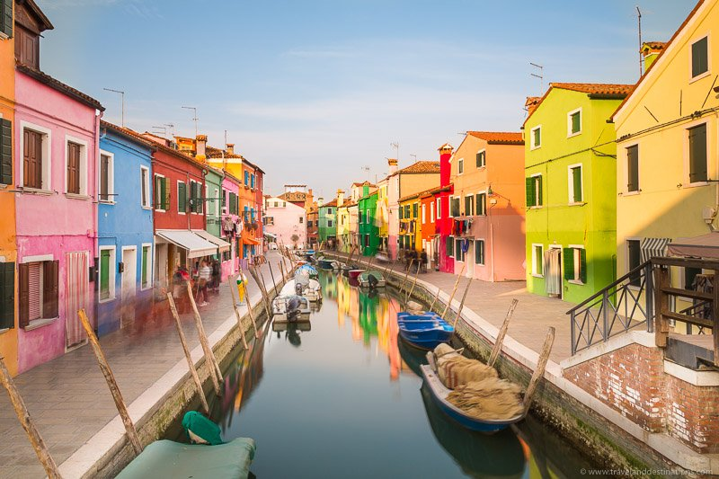
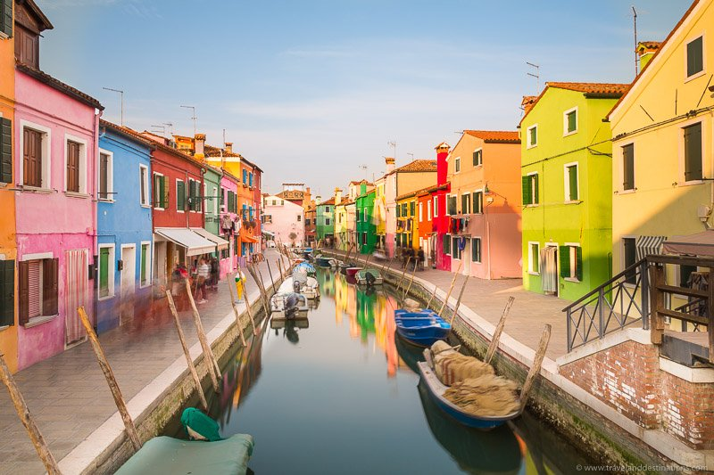
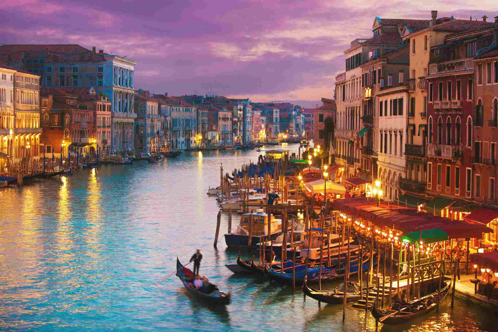
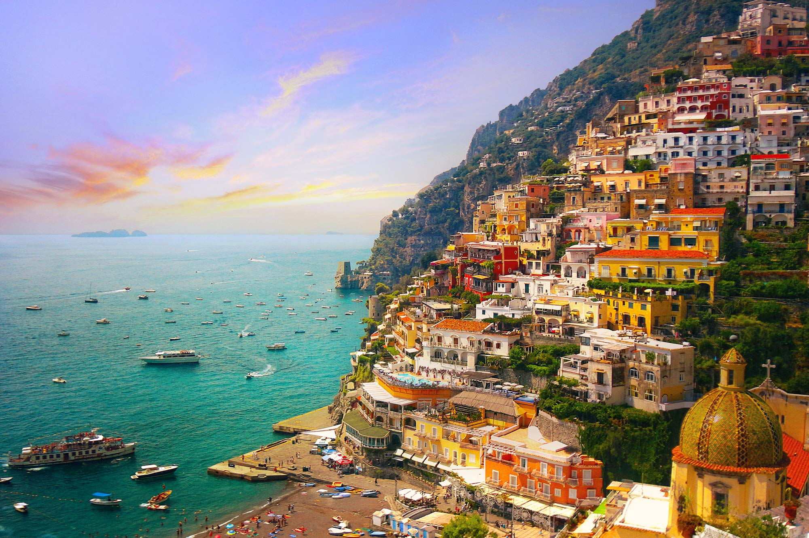
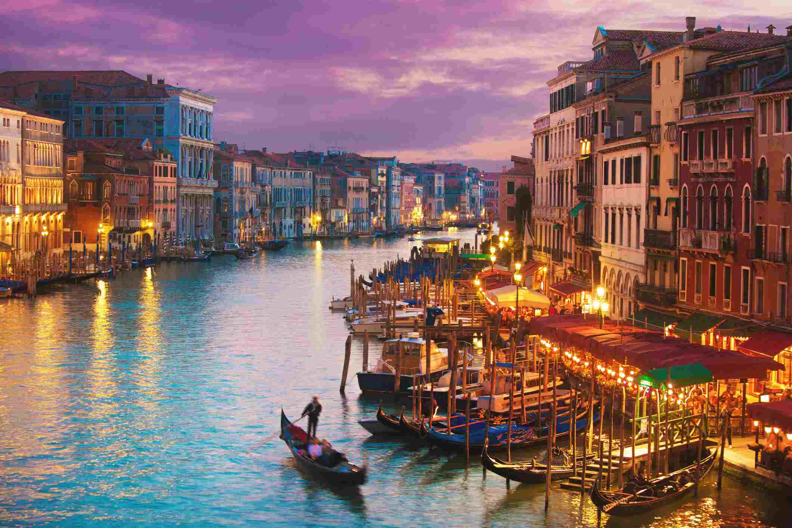
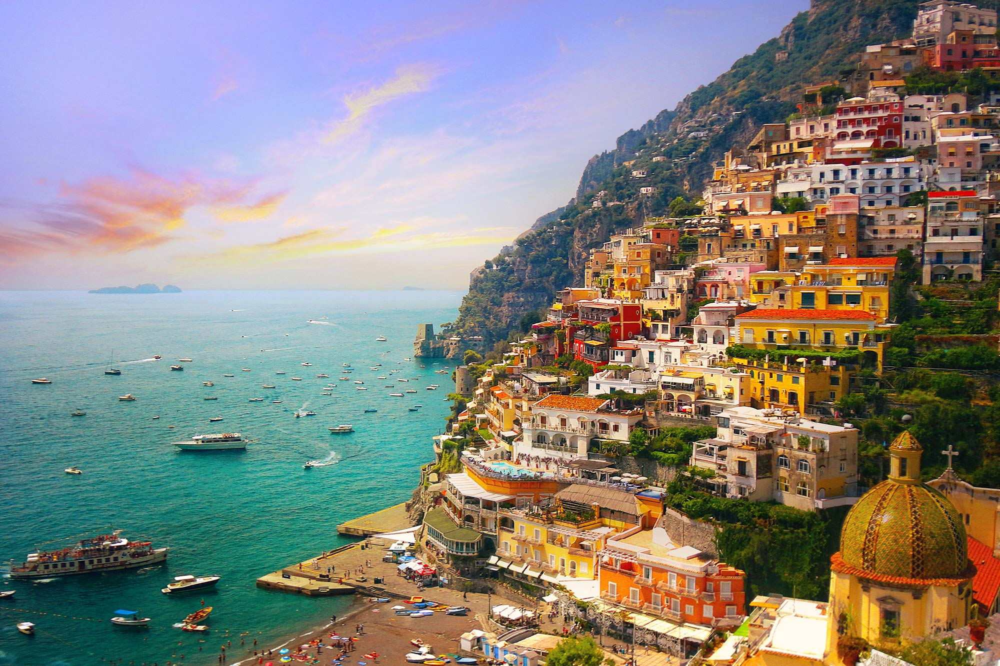

Italy
Cuisine
Italian food is a surprisingly diverse cuisine. Each of the twenty Italian regions has a distinctive set of flavors, recipes, products, and ingredients. In fact, the Italian regions were not officially united as a nation until the mid-19th century; therefore, each individual region has retained much of its exclusive identity.
Transport
Italy has a well developed transport infrastructure. The Italian rail network is extensive, especially in the north, and it includes a high-speed rail network that joins the major cities of Italy from Naples through northern cities such as Milan and Turin.
St. Mark's Basilica
One of the most important tourist sites in Venice is St. Mark's Basilica. Most visitors in Venice will find themselves in the famous square, Piazza San Marco, in front of the basilica, looking at the main west-facing facade. The building itself is a work of art, with a mix of architectural styles heavily influenced by the Byzantine Empire, showing Venice's long trade connections to the East. Highlights of the vast interior are the mosaics and the high altar, covered in gold and jewels. Next to the basilica is the Doge's Palace, also filled with priceless masterpieces of Italian art.
Venice
A gondola ride through the canals of Venice is a tradition that travelers have been enjoying for centuries. Venice is a city of islands, and the canals have long been the city's main streets, connected by a labyrinth of narrow passageways. Lining the canals are old buildings that have remained relatively unchanged for hundreds of years, adding to the romantic charm. The Grand Canal is the most famous of these waterways and one of the most photographed sites in Venice. The best way to see many of the grand palaces, whose fronts face the water, is from a Vaporetto ride along the Grand Canal.

 



 



Vatican City
The Vatican is home to some of the world's most priceless art and art collections. The centerpiece is the great Basilica of St. Peter, with the tomb of St. Peter and one of Michelangelo's most poignant works, the Pieta. Outside is St. Peter's Square, where the Pope addresses followers. The Sistine Chapel is famous for its wall and ceiling paintings by Michelangelo, and in the Vatican Museum, you'll see works by many of Italy's other most famous artists.
Leaning tower of Pisa
The Leaning Tower of Pisa is actually just one of many attractions in the city of Pisa, but its fame, gained from its flaw, is world renown. Work began on the tower in the 1100s, and the sinking, which led to the lean, began by the time the tower reached the third story. Prior to restoration work in the 1990s, it was predicted to topple over by the year 2000. Today, visitors can climb up the stairs of the tower for a fabulous view over the city.
Florence Duomo Santa Maria del Fiore
The cathedral was built between the 13th and 15th centuries, with the most famous piece being the extraordinary dome, completed by Filippo Brunelleschi in 1434. The cathedral's bell tower stands close beside the cathedral in Piazza del Duomo, covered in the same patterned marble typical of Tuscan Romanesque architecture. Designed by Giotto, the campanile stands 82 meters tall and can be climbed. Its 414 steps lead up to a viewing platform with fantastic views of the city. Opposite the Duomo is a magnificent baptistery, famed for its bronze paneled doors.
Colosseum
This huge Amphitheater is the largest of its kind ever built by the Roman Empire and has remained a model for sports facilities right up to modern times. Built as a venue for public spectacles and shows - even mock sea battles, it had a wooden floor that was 83 by 48 meters. Underneath it were two stories of tunnels, rooms, cells, and passages for gladiators, workers, wild animals, and storage. Today, the structure stands in stark contrast to the modern development that surrounds it and is a prominent reminder of ancient times and the extensive history of Rome.
Cinque Terre
Cinque Terre is a lovely coastal region with steep hills and sheer cliffs overlooking the Mediterranean. The five picturesque villages of Monterosso al Mare, Vernazza, Corniglia, Manarola, and Riomaggiore can be reached by several means, joined to each other by walking paths, a railroad that tunnels through the headlands to emerge at each town, or a scenic narrow road high on the hillside above. Hiking between the villages is one of the most popular things to do as it gives travelers the chance to enjoy the landscape. The small towns have maintained a feel of old-world fishing villages and offer a sense of remoteness even in the face of modern tourism.